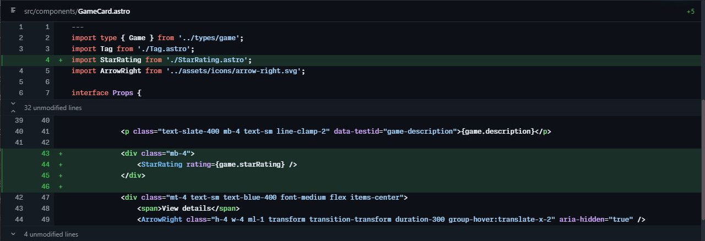
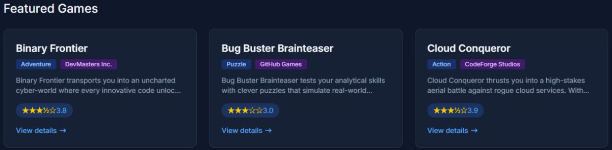
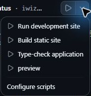
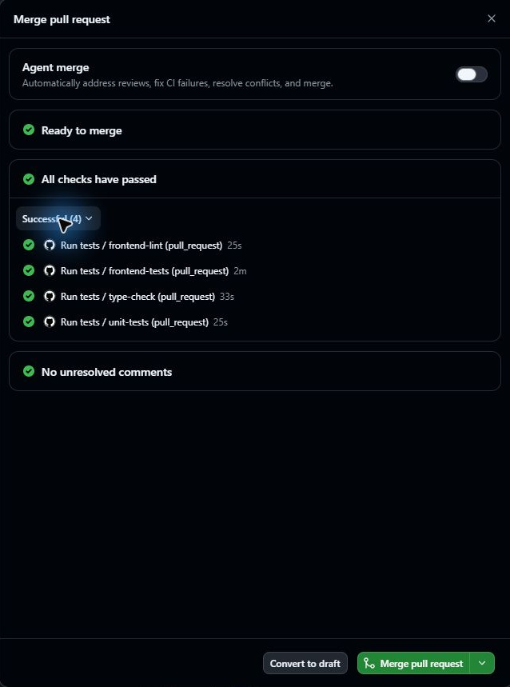

3.1 章の概要
GitHub Copilot appのエージェントに実装を依頼した後は、生成された差分と動作を確認し、変更を取り込むか判断するのが受講者の役割です。この章では、変更の範囲を絞り、依頼に含めた仕様と確認条件を、差分、画面、テストと照合する方法を学びます。
小さな表示の変更にも、データの値をどう解釈するか、既存のどの動作を保つかという判断が含まれます。作業対象と実行場所を確かめてから、依頼、レビュー、動作確認、PRのマージまでを一通り体験しましょう。エージェントの完了報告だけで判断せず、実際の差分と動作を確かめます。
3.1.1 この章で学ぶこと
| 項番 | この章で行うこと | 到達した状態 |
|---|---|---|
| 1 | 実装セッションの開始元、作業ディレクトリ、ブランチと実行環境を確認する | 意図した作業対象と実行場所で変更を始められるか判断できる |
| 2 | 変更後の表示、データの扱い、既存の構造やリンクを保つ条件と確認方法を伝える | 変更の範囲と、実装後に満たすべき条件をエージェントと共有できる |
| 3 | 差分、画面、テスト結果を依頼の仕様と照合し、不足があれば修正を依頼する | エージェントの完了報告と検証結果を基に、変更が依頼を満たすか判断できる |
| 4 | PRをレビューし、CIの全ジョブの成功を確認して、手動でmainへマージする | 変更を取り込む可否を判断し、mainに反映されたことを確認できる |
3.2 取り組む前に
前章でAppに接続したTailspin Toysの演習用リポジトリを使います。教材用テンプレートに含まれる設定をAppで承認し、そのプロジェクトの入力欄へ進めることを確認してください。実装を始めるセッションでは、Node.jsのバージョンも確認します。
本章の作業場所は、Tailspin Toysの演習用リポジトリのmainを基に作る新しいworktreeです。Appでローカルリポジトリを実行場所に選ぶと、既存の作業フォルダーを使います。編集前にエージェントの作業対象となるプロジェクト、作業ディレクトリ、ブランチを確かめ、同じcheckoutを使う複数セッションでは同時に編集しないようにします。
3.3 ケース
第2章では、GitHub Copilot appのIssuesでTailspin Toysの演習用リポジトリの課題を読み、相談用のChatsでエージェントにworktreeの仕組みを質問しました。このケースでは、前章で接続したTailspin Toysの演習用プロジェクトで実装用のエージェントセッションを開始し、ゲームカードの星評価表示を題材に最初のコード変更を行います。
| 項番 | 観点 | このケースで扱う内容 |
|---|---|---|
| 1 | 状況 | 演習用サイトTailspin Toysでは、各ゲームのデータに星評価の値があり、ゲームの詳細ページにも表示されています。一方、トップページの一覧カードには星評価がありません。 |
| 2 | 課題と理由 | Tailspin Toysの利用者は、一覧カードだけではゲームの星評価を比較できません。ゲームを選ぶときの判断材料を増やすために対応します。 |
| 3 | 解決策 | 既存の評価値をトップページの各一覧カードに表示し、再利用できる表示部品があれば使います。0点と未評価を表示し分け、既存のカード構造とゲーム詳細へのリンクを保ちます。 |
実装を依頼する前に、Tailspin Toysのゲームカードで0点と未評価をどのように表示し分けるか考えてみましょう。エージェントが生成したコードを読む際も、次の手順でその予想と結果を比べます。
3.3.1 セッションと環境を確認する
Appに接続したTailspin Toysの演習用プロジェクトで、新しい実装セッションを開始してください。エージェントの作業場所を確認してから変更を依頼します。
- GitHub Copilot appを開きます（起動済みの場合はそのまま進めます）。
-
サイドバーの Projects で、演習用プロジェクトを右クリックし、メニューの
+New session を選択します。 -
New 画面の入力欄下部に、自分の演習用プロジェクト名が表示されていることを確認します。実行場所は New worktree、開始元は main を選びます。モードは、応答を読みながら指示を加える Interactive で進めます。
Interactive・Plan・Autopilotの違いは公式のモード説明で確認できます。
3.3.1.1 実装前の環境確認
ローカルPCのターミナルとAppの実装セッションでは、実行するNode.jsが異なる場合があります。これからエージェントがテストやビルドを行うセッションでのNode.jsのバージョン確認は、環境を原因とするエラーかを判断するための手がかりです。
- 機能の実装を依頼する前に、次のプロンプトを送信します。
このセッションで node --version を実行し、コマンドの出力をそのまま報告してください。
作業ディレクトリと現在のブランチも確認してください。
ファイル変更、追加インストール、PR作成はしないでください。- ツールの実行結果で、Node.js 24系の24.19.0以降が使われていることを確認します。作業ディレクトリとブランチも、今回のworktreeのものか確かめます。コマンドが見つからない場合や要件を満たさない場合は、前章までのNode.jsの準備を見直します。Node.jsを切り替えた後はAppを再起動し、このセッションで再確認してから実装へ進みます。
エージェントの説明に書かれたNode.jsのバージョンを、ツールのコマンド出力と照合します。環境の確認ができたら、同じ実装セッションで星評価の表示を依頼します。
3.3.2 星評価の実装を依頼する
- 環境を確認した実装セッションの入力欄に次のプロンプトを入力し、星評価の表示をエージェントに依頼します。
ゲームカードに各ゲームの星評価を表示してください。
Game 型には starRating があり、5点満点の数値、または未評価を示す null が入ります。
src/components/GameCard.astro の各カードに表示し、null の場合は「No rating yet」と表示してください。
0は評価値として表示し、未評価と区別してください。
詳細ページの既存の評価表示と関連コンポーネントを確認し、再利用できるものを使ってください。
変更は小さく保ち、カードの構造やゲーム詳細へのリンクは組み替えないでください。
通常データを変更せず、GameCardの実際のレンダリング結果で4.2、0、5、nullの表示とリンク構造をテストしてください。
利用するNode.jsのバージョン、変更内容、実行したテストと結果を報告してください。
PR作成とマージは、後で指示するまで行わないでください。- Enter キーを押して、プロンプトを送信します。
エージェントが行うのは、Tailspin Toysのコードの調査と、ゲームカードへの星評価表示に必要な変更です。完了報告を受けたら、次の手順で実際の差分とテスト結果を読み、依頼した仕様と照合してください。
3.3.3 差分とテストをレビューする
エージェントが生成した星評価の変更は、マージ前に受講者がレビューします。実装セッションのChangesで対象ファイルと差分を読み、星評価を加えるために何が変わったか確かめましょう。
- 会話入力欄の上部にある Changes（Open changes）を選択します。変更されたファイルの一覧とコード差分を確認します。

- ゲームカードの描画を担う
src/components/GameCard.astroに、星評価を表示する変更があることを確認します。
3.3.3.1 値の意味からレビューする
ゲームの星評価をif (game.starRating) のように値の真偽だけで分けると、JavaScriptでは 0 も偽として扱われます。そのため、0点が未評価と表示される実装になっていないか確認します。Tailspin Toysの星評価データではnullが未評価です。数値と未評価の区別を明示してください。
| 項番 | 入力 | 期待する意味と確認内容 |
|---|---|---|
| 1 | 4.2 |
小数を含む評価を5点満点として表示する |
| 2 | 0 |
0点という評価を表示し、No rating yetにしない |
| 3 | 5 |
上限の評価を表示する |
| 4 | null |
No rating yetを表示し、数値の評価を表示しない |
ゲームカードへの変更後も、既存のタイトルや説明、ゲーム詳細へのリンクが保たれているか確認します。星の形や色だけに意味を任せず、テキストや読み上げ用の名前からも評価値が分かることを確かめましょう。数値表示と No rating yet が同時に出ないこともレビューの対象です。
星評価の表示を検査するテストのコードも、実装セッションのChangesで読みます。テスト内に条件式だけをコピーして検査しても、実際のGameCardにその実装が使われたことは確認できません。星評価の境界値を渡してコンポーネントをレンダリングし、その出力に期待した表示とリンクがあるかを検査する必要があります。テストが不足していれば、同じ実装セッションで次のように追加指示をエージェントへ送ります。
テストがGameCard.astroの実際のレンダリング結果を検査しているか確認してください。
4.2、0、5、nullについて、表示される内容と表示されない内容を確認し、ゲーム詳細へのリンクも検査してください。
通常のCSVやDBは変更せず、テスト用データを使ってください。
不足を修正し、lint、型検査、単体テスト、E2E、buildの結果を報告してください。
PRはまだ作成しないでください。3.3.4 ブラウザーで動作を確認する
Appで星評価を実装したセッションのRunメニューから、Tailspin Toysの開発サーバーを起動してください。ブラウザーでゲームカードの表示を確認し、利用者に見える結果を、依頼した仕様と比べます。
補足
.github/github-app.ymlが適用されたセッションのRunメニューを使用します。メニューに実行項目が表示されない場合は、演習用コピーの設定内容と適用状態を講師と一緒に確認してください。

Tailspin Toysの通常データに含まれる21件のゲームはすべて数値評価を持つため、そのデータを使う画面だけではnullの表示を確認できません。ゲームカードの画面と、テスト用データによる境界値の検査を合わせて判断します。
3.3.4.1 開発サーバーの起動と停止手順
-
星評価を実装したセッション上部の Run options から Run development site を選択します。
- ボタンが Run Run development site と表示されている場合は、クリックして起動します。
- すでに Stop Run development site と表示されている場合は稼働中ですので、そのまま次の手順へ進んでください。

- Runのターミナルに表示されたローカルURLを開きます。Browserパネルが自動で開かない場合は、表示されたURLを別ブラウザーで開いてください。ポート番号は自分の実行結果を使います。
- Tailspin Toysのトップページの21件のカードに星評価が表示され、タイトル、説明、詳細へのリンクが保たれていることを確認します。通常画面で出現しない
nullと境界値は、前節のレンダリングテストの結果で確認します。 - 任意のカードから詳細ページへ移動し、評価値が一覧と一致することを確認します。一覧へ戻れることも確かめてください。
- 確認後、セッション上部の Stop Run development site を選択します。Runのターミナルで Shell session ended などの終了表示を確認してください。停止後もブラウザーには直前の画面が残る場合があるため、その画面だけで稼働中と判断しないようにします。
3.3.5 最初のPull Requestを作成してマージする
星評価の動作確認を終えた変更を、PRで自分の演習用リポジトリのmainへ取り込みます。この章で使うのは手動マージです。後の章では、同じ確認を経てエージェントにマージを任せる方法も体験します。
星評価のPRは実装に使ったセッションから作成し、差分やCIの結果をApp内で確認できます。作成済みのPRをAppのサイドバーから開く入口はPull requestsです。機能の説明はGitHub公式のPR管理手順も参照してください。
- 星評価を実装したセッションの画面右上にある Create PR を選択します。
- ブラウザー認証を求められた場合は、Sign in with your browser を選択し、画面の指示に従って認証します。
- Copilotがpull requestの作成処理を開始します。
- 作成されたPRのリポジトリが自分の演習コピーで、取り込み先が main であることを確認します。本章では Agent mergeをOff にして、手動でマージするところまで進めます。
- 同じ実装セッションのチャット欄のすぐ上にある PR バブルを選択し、レビューペインで作成されたpull requestの内容を最終確認します。
- Ready to merge を選択し、ダイアログのCI結果を確認します。このボタンの表示だけでは、CI全成功とは判断できません。Checks are running や実行中のジョブがあれば待ち、すべてのジョブの成功を確認します。表示が更新されない場合は画面を開き直し、必要に応じてGitHub Webの同じPRでも照合してください。

- 差分、テスト結果、未解決のレビュー指摘を確認したうえで、Merge pull request を選択してmainへマージします。
- AppとGitHub Webで対象PRが Merged になったことを確認します。次章では、マージ済みのmainから新しいworktreeを開始します。
これで星評価の変更が自分の演習用リポジトリのmainへ取り込まれました。公開サイトへのデプロイは本章では扱いません。
3.4 結果の整理と振り返り
Tailspin Toysのゲームカードへの星評価表示をエージェントに依頼し、レビューした変更を自分の演習用リポジトリのmainへ取り込みました。確認したことを整理しましょう。
| 項番 | 確認した根拠 | 判断したこと |
|---|---|---|
| 1 | 作業ディレクトリとブランチ | 今回のworktreeで編集していること |
| 2 | Changes | 既存表示とリンクを保ち、星評価だけを加えていること |
| 3 | 通常データの画面 | 利用者が一覧で評価を読め、詳細ページへ移動できること |
| 4 | レンダリングテスト | 4.2、0、5、nullを仕様に沿って表示し分けること |
| 5 | PRのCIとMerged | 用意された検査に成功し、変更をmainへ取り込んだこと |
「0とnullを分ける理由」「通常の21カードだけでは確認できないこと」「Ready to mergeの表示後に読む情報」を、自分の言葉で説明してみましょう。
最初に予想したゲームカードの表示と、エージェントが生成した実装は一致しましたか。追加指示をエージェントに送った場合は、何が不足し、修正後にどの根拠を得られたかを振り返ります。次の課題でも、依頼、差分、画面、テストのつながりを追います。
次章の題材は、エージェントとコードの書き方を共有するカスタム指示です。第4章「カスタム指示によるCopilotのガイド」へ進んでください。
3.5 補足
3.5.1 小さな変更から始める理由
本章で小さな変更から始めるのは、エージェントへの依頼、差分のレビュー、動作確認、PRのマージまでを一通り経験し、各段階で自分が何を判断するかをつかむためです。最初から複数の機能をまとめて任せると、要件の伝え方、実装、環境のどこに問題があったのかを追いにくくなります。目的と確認対象を絞れば、予想と結果の違いを見つけて修正し、同じ確認を繰り返しやすくなります。
Tailspin Toysの星評価表示では、各ゲームの評価値がすでにデータにあり、ゲーム詳細ページにも表示されています。本章で追加するのは、ホームページの一覧カードにもその値を表示する機能です。データの収集や保存方法は変えず、既存の表示部品を再利用できるか調べます。カードの構造と詳細ページへのリンクを保つ条件も定めているため、評価の表示とその確認に集中できます。ただし、0点という評価値と、未評価を表すnullの表示を分ける判断やテストは、この小さな変更にも必要です。
ここでいう変更の小ささは、修正行数やファイル数だけで決まりません。変更の目的が一つで、その目的に必要な実装と検証をまとめてレビューできることが判断の基準です。星評価の表示コードと、その表示を確かめるテストは同じ目的に含まれます。無関係なレイアウトの変更やデータ保存方式の変更まで一緒に進めると、目的も確認範囲も広がります。GitHub公式も、一つの目的に絞った小さなPRを勧めています。
実務のIssue駆動開発では、Issueに「なぜ変えるのか」「何を変えるのか」「何を満たせば完了か」を記し、その合意を基に実装とレビューを進めます。Issueを作っただけで、適切な作業単位になるわけではありません。担当者とレビューする人が、目的と完了条件を同じように理解し、結果を確かめられる範囲に整理します。大きな課題を分割するときも、元の目的との関係と、他の課題への依存を残します。GitHub公式のIssueの分割に関する説明では、課題の分割と依存関係の明確化を案内しています。
| 項番 | 判断すること | 実務で確認すること |
|---|---|---|
| 1 | 目的 | 利用者のどの問題を解決するかを説明できるか。別の目的の改修が混ざっていないか |
| 2 | 完了条件 | 期待する動作、例外となる入力、保つべき既存動作を示し、結果を確かめられるか |
| 3 | 変更と検証の範囲 | 目的に必要な実装とテストをそろえ、レビューする人が差分と結果を追えるか |
| 4 | 依存関係 | 他の変更が先に必要か。分割する場合に、実装・レビュー・取り込みの順を説明できるか |
たとえば実務で「ゲームを比較しやすくする」という大きな課題に取り組む場合、一覧カードへの星評価表示を一つのIssueとして切り出せます。目的は利用者が評価を比較できること、完了条件は評価値・0点・未評価の表示と既存リンクの維持です。検索やレイアウトの改修は、それぞれの目的と完了条件を決めて別の課題として検討します。一方、評価表示にAPIやデータ保存の変更が不可欠なら、その依存も含めて実装・検証の範囲を決めます。分割する場合は、取り込みの順と途中の状態で利用者に影響が出ないかも確かめましょう。
IssueとPRを必ず一対一にする必要はありません。一つのIssueを複数のPRで進める場合は、それぞれが担う目的と取り込み順を示します。同じPRの中で意味のある単位にコミットを分けることも、レビューを助けます。ただし、コミットを細かくするだけでは、Issueの目的や完了条件が明確になるわけではありません。
Copilotへ渡す課題についても、解決する問題、受け入れ条件、変更箇所を明確にする考え方は、Copilot cloud agent向けの公式ガイドを参考にできます。本章では受講者が要件を直接伝え、最初の開発の流れを学びます。第4章からはIssueを起点に進めますが、目的と完了条件を共有し、必要な差分と検証結果を基に取り込みを判断する考え方は共通です。
3.5.2 セッションとworktreeの役割
GitHub Copilot appのセッションとは、特定のプロジェクトを対象としてエージェントと対話を行う作業空間です。Appのサイドバーのプロジェクト一覧から起動できます。
Appでセッションを開始するときは、GitHub公式のセッション手順に沿って、新しいworktree、ローカルリポジトリ、クラウドの実行環境を選べます。本章で選ぶ実行場所はNew worktreeです。演習用リポジトリのmainを基にした別の作業場所で変更します。worktreeを分けることは作業中のファイルを分けるためであり、変更が自動的にmainへ反映されるという意味ではありません。受講者がレビューし、PRを自分のmainへマージして、変更を次章で利用できる状態にします。
各セッションでは、会話、操作履歴、差分を合わせて読みます。
| 項番 | 要素 | 確認する内容 |
|---|---|---|
| 1 | Chat | エージェントへの指示と回答 |
| 2 | Tool Activity | 調査や編集、検査で実行された操作 |
| 3 | Changes | 変更ファイルとコードの差分 |
ヒント App内で組み込みターミナルを開く場合は、Toggle panel →
+（Add tab）→ Terminal からアクセスできます。開発サーバーの起動・停止には、実装セッションのRunメニューを使います。
3.5.3 依頼に含める仕様と確認方法
補足 星評価の実装を依頼するプロンプトでは、更新対象ファイルと期待する表示を指定しています。ファイル指定は必須ではありませんが、変更範囲を共有すると、レビュー時にも目的に沿った変更か確かめやすくなります。既存実装の調査を依頼しているのは、同じ評価表示を別々に作り、ゲーム一覧と詳細ページで表示が食い違うことを避けるためです。
今回の星評価の実装依頼に含めるのは、「何を表示するか」「既存の何を保つか」「どう確かめるか」の三つです。たとえば、ゲームカードに星が見えるだけでは null の扱いやリンクの維持までは分かりません。実装前に受け入れ条件を具体化しておくと、完了報告を読んだ後に確認する対象も明確になります。
3.5.4 0とnullを区別するコードの読み方
次のコードは、ゲームの星評価データを数値と null に分ける条件の説明例です。既存の StarRating コンポーネントを再利用した実装では、数値側がコンポーネントの呼び出しになることもあります。
{game.starRating !== null ? (
<span class="text-xs font-medium px-2.5 py-0.5 rounded bg-amber-900/60 text-amber-300" data-testid="game-rating">
★ {game.starRating} / 5
</span>
) : (
<span class="text-xs font-medium text-slate-500" data-testid="game-rating-empty">
No rating yet
</span>
)}補足 星評価を表示するためにCopilotが生成するコードは、毎回同じとは限りません。この説明例のコードと違っていても、要求を満たしていれば採用できます。ただし、同等の動作になっているかは差分とテストで確認してください。見た目の類似やエージェントの説明だけでは判断できません。
3.5.5 差分、画面、テスト、CIで確かめること
この章の星評価の実装では、コードの差分で変更の範囲、ローカルのTailspin Toysの画面で利用者に見える結果、テストで通常画面に現れない条件を確認しました。それぞれ確認できる対象が違うため、どれか1つの成功で他を省略せず、結果を合わせて判断します。
CIは、共有された環境で変更を検査する仕組みです。AppのReady to mergeボタンがマージ可能に見えることと、用意された検査がすべて成功したことは別なので、星評価のPRでもジョブの結果まで読みます。